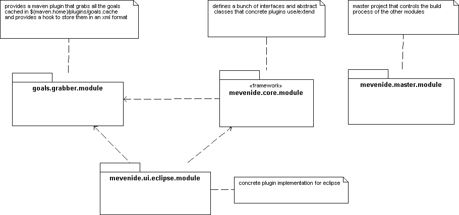
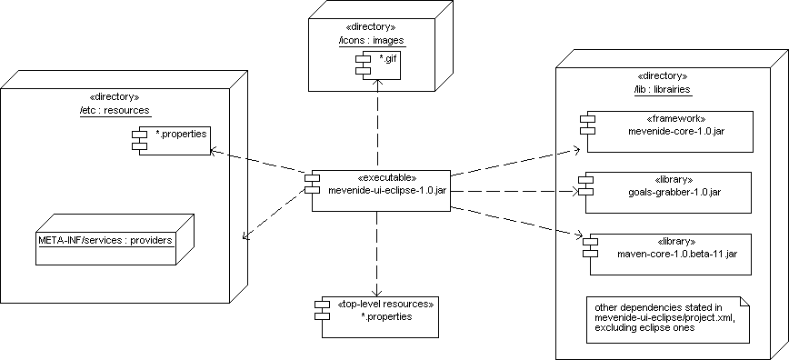

|

|
Table of contentPreambule PreambuleIf you read this, i guess you're a developper that want to/do participate in the Mevenide project, or you want to build Mevenide from the sources, and/or want to understand some of the internals. This document presents the Mevenide structure and explains how to build and test it using the Eclipse runtime-workbench. It focuses on Eclipse integration. This is a draft subject to change. To begin with you should chek out a fresh version of the various Mevenide modules. There are atm four modules you need :
Those are the various artifacts of Mevenide. The mevenide-master project (name should be self-explanatory) is the build process controller. The build process is triggered by calling maven build-all
The
goals-grabber
project is a Maven plugin that defines the
The
mevenide-core
defines interfaces and abstract classes, and some utility classes, that concrete plugin
implementations shall use and extend. It makes huge use of the Template pattern. commons-discovery is used
to retrieve concrete implementations at runtime.
The
mevenide-ui-eclipse
is the concrete Eclipse plugin. We will see later its layout.
The picture below (Figure 1) depicts the relationships between those modules.

Building the various artifacts
The
Also the site generation, tho buggy, has been reactored too. The site generation process can be triggered by running
For the build to be successful, you need to NOT rename the various projects (or at least, make sure the modifications are done in the maven.xml as well). Why do i rely on project names ? Cuz i have only one workspace (not counting the runtime-worskpace :) ok, thats perhaps bad practice), and so i cannot reactor projects without explicitly specifying subproject names. In base-project.xml, which all our POMs
should inherit, you can see that some unit tests have been explicitly
exclude. Indeed they fail if ran from maven, although they're
successful from within Eclipse. I guess there's here a problem with the
way i declared the resources. There are also other tests that have
been excluded cuz they're expected to fail if not launched from within
Eclipse through the Configuring the build processIf there should be no problem to build the goals-grabber and the mevenide-core subprojects, the mevenide-ui-eclipse project is a little bit trickier to configure since most of the Eclipse libraries are not present at ibiblio (perhaps should we ask to upload them ? im not sure here). So i can see two ways of solving that issue :
I choose the first solution because (1) it uses then the common mechanism and (2) it doesnt pollute the project.properties file. However in either case we need to set properties :
We take care of the jars copy by adding a preGoal for
<copy file="${eclipse.home}/plugins/org.eclipse.core.resources_2.1.0/resources.jar"
tofile="${maven.home}/repository/eclipse/jars/eclipse-resources-2.1.0.jar"/>
...
<copy file="${eclipse.home}/plugins/${swt.plugin.dir}/swt.jar"
tofile="${maven.home}/repository/eclipse/jars/eclipse-swt-2.1.0.jar"/>
Concerning the site generation, i chose to use a property to identify the siteDirectory
So, in brief, you need to set those properties in project.properties :
In addition, for the ANT script to work, you to set those two properties in build.properties :
and then invoke
Before launching the Runtime-workbenchAt this point you should have been able to build the project thanks Maven (and, as a corollary, to configure your Eclipse project thnaks Maven).
Before launching the runtime-workbench, please make sure that mevenide-ui-eclipse directory layout is correct
regarding the meta-informations contained in the
maven mevenide:prepare-lib So, what's then the expected layout ? this plugin uses a quite high number of libraries, so we group them under the /lib directory. We also declare the /etc directory to be a runtime-dependencies containing only resources. Icons are stored in the /icons directory and, last, our ResourceBundles are for now in the top-level directory (TODO : put them in /etc/i18n directory). Your project layout should be like described below : ${eclipse.plugins.dir}/org.mevenide_0.1/
+- etc/
| +- META-INF/
| | |
| | +- services
| | |
| | +- org.mevenide.core.AbstractGoalsGrabber
| | +- org.mevenide.core.AbstractGoalsManager
| | +- org.mevenide.core.AbstractRunner
| | +- org.mevenide.sync.ISynchronizer
| | +- org.xmlpull.v1.XmlPullParserFactory
| |
| +- commons-logging.properties
| |
| +- mevenide.properties
|
+- icons/
| |
| +- *.gif
|
+- lib
| |
| +- *.jar
|
+- plugin.xml
|
+- MavenPluginResources.properties

Runtime testing : unresolved issuesThose are identified, yet not solved, issues
Those two issues above are top-priority.. |